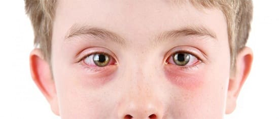
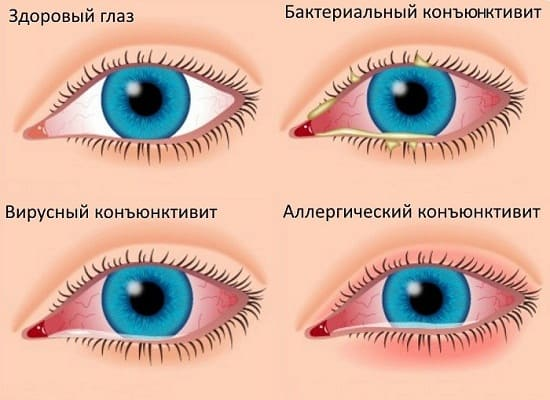
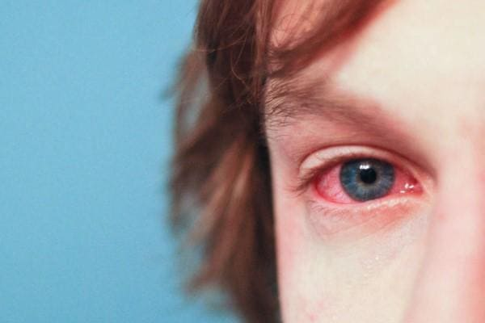
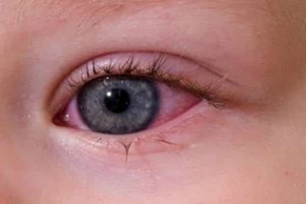
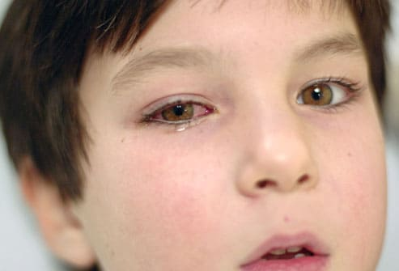
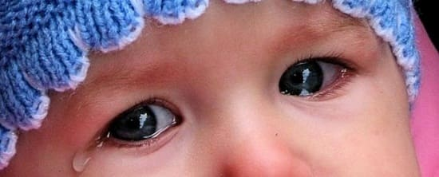

Покраснение глаз, которое медики называют конъюнктивитом, — это воспаление конъюнктивы (слизистой оболочки глаза), которая покрывает белую часть глазного яблока и внутреннюю поверхность века. Конъюнктивит — это описание состояния глаза, а не диагноз. Поскольку из-за воспаления проходящие в слизистой крошечные кровеносные сосуды увеличиваются, глаза становятся испещренными красными полосками. Потому эту болезнь и называют «красный глаз». Конъюнктивит — это одна из самых частых причин визитов к врачу. Его очень важно диагностировать и лечить, поскольку у него очень много причин. Вот четыре момента, которые вы должны знать, чтобы помочь врачу найти верную причину:
• на что похожи выделения, если они есть;
• как чувствуют себя глаза;
• как это началось;
• как реагируют на лечение.
Используя эти подсказки, вы можете узнать причину конъюнктивита, определить тип инфекции, от которой страдает ваш ребенок, и понять, когда стоит обращаться за медицинской помощью.

БАКТЕРИАЛЬНЫЙ КОНЪЮНКТИВИТ
Бактериальный конъюнктивит развивается, когда бактерии (обычно гемофильная палочка, стрептококки, моракселла или стафилококки) вызывают воспаление конъюнктивы, приводя к тому, что кровеносные сосуды расширяются («красные глаза»), появляется гнойное отделяемое с поверхности конъюнктивы. Состояние глаз, как правило, хуже утром, так как ночью, пока они закрыты, на веках образуется корочка. Бактериальный конъюнктивит зачастую является причиной того, что веки плотно слипаются утром. При бактериальном конъюнктивите глаза краснеют сильнее, чем при вирусном. Края век также красные и распухшие. Бактериальный конъюнктивит может поразить как один, так и оба глаза и обычно быстро, в течение пары дней, проходит при лечении антибиотиками. В отличие от других при бактериальном конъюнктивите глаза выглядят хуже, но обычно меньше зудят. Бактериальный конъюнктивит — самый беспокоящий и самый опасный в плане передачи инфекции. Он передается, когда маленькие исследующие ручки трогают полотенца, игрушки, мочалки и косметику, а затем трут свои глаза пальчиками. Бактериальный конъюнктивит составляет примерно 70% всех случаев конъюнктивита у детей.
ЛЕЧЕНИЕ
Определив, что виновником являются бактерии, врач выпишет вашему ребенку капли или мазь с антибиотиком, которые нужно будет использовать по меньшей мере 4 раза в день. Если команда «Лекарства» выиграет у «Бактерий», вы увидите значительное улучшение (уменьшается гиперемия — краснота, выделений становится намного меньше) через пару дней, и ваши обожаемые маленькие глазки снова вернутся к своему нормальному ясному виду в течение недели. В дополнение к назначенным лекарствам несколько раз в день вымывайте слизь из глаз теплой кипяченой водой (или раствором фурацилина), особенно утром, чтобы освободить глаза от корочек. Чтобы не допустить того, что ваш ребенок станет источником инфекции (конъюнктивита) для своих друзей, скажите ему не тереть глаза, «пока не сойдет краснота».

СОВЕТ ДОКТОРОВ СИРС: КАПЛИ ИЛИ МАЗЬ? Дети младшего возраста зачастую наотрез отказываются от глазных капель. Когда они видят, что вы приближаетесь к их уже и без того больным глазкам с маленькой бутылочкой, глаза плотно закрываются и защищающие ручки закрывают их. Чтобы избежать лекарственной войны, положите ребенка, чтобы он расслабился и закрыл глаза. Капните две капли в уголок глаза. Когда малыш откроет глаз, капли перетекут туда. Если он не хочет открывать глаза, вы можете осторожно оттянуть вниз нижнее веко, чтобы капли перетекли в глаз. Или попросите врача выписать мазь, которая постепенно впитается. Накладывайте мазь во внутренний уголок глаза, где соединяются веки. Если ваш ребенок готов к содействию, оттяните нижнее веко и выдавите ленточку мази в образовавшийся карман (совет: положите тубу с мазью в свой карман или в карман ребенку, чтобы она немного разогрелась, что облегчит ее применение). Подержите веко оттянутым вниз около 10 секунд, чтобы мазь впиталась, а не вытекла на щеку. Выбор между мазью и каплями — дело случая: некоторые дети предпочитают мазь, поскольку капли могут жечь. Другие предпочитают капли, так как мазь может временно затуманивать зрение. |
КАК ДОЛГО МОЙ РЕБЕНОК БУДЕТ ОПАСНЫМ ДЛЯ ОКРУЖАЮЩИХ
Хотя бактериальный конъюнктивит очень контагиозен («заразен»), он также хорошо поддается лечению. Мы рекомендуем не пускать ребенка в школу или детские учреждения в течение 24 часов после начала лечения антибиотиками.
КОГДА БЕСПОКОИТЬСЯ
Если вы не замечаете уменьшения отечности век, покраснения или выделений в течение 2—3 дней, позвоните врачу, поскольку, возможно, есть необходимость пересмотреть диагноз и/или лечение. В зависимости от используемых антибиотиков иногда выделения уменьшаются, но краснота и воспаление могут усилиться из-за аллергической реакции на раствор. Еще более важными признаками, требующими немедленного обращения к врачу, являются: отек, краснота и болезненность над или под глазным яблоком, что сопровождается лихорадкой, и при этом ребенок плохо себя чувствует. Это означает, что бактериальная инфекция распространилась в ткани, окружающие глаз, и, если ее не лечить, может перейти в серьезную инфекцию костей и тканей вокруг глаза. Поскольку это редкое осложнение конъюнктивита, необходимо обратить на него внимание. Если бактериальный конъюнктивит правильно диагностировать и правильно лечить, он легко проходит, не причиняя вреда зрению.

СОВЕТ ДОКТОРОВ СИРС: ЕСЛИ СОМНЕВАЕТЕСЬ, ПРОВЕРЬТЕ! При любом конъюнктивите, особенно если он не совпадает с обычным описанием и не улучшается после 7 дней лечения, следует обратиться к детскому офтальмологу. Одной из главных причин является необходимость исключения герпетической инфекции глаза, которая может причинить вред зрению, если ее не лечить. Признаками герпетической инфекции являются немного затуманенный зрачок и появление герпетических воспалений, называемых везикулами, на веках. Опять же, если вы сомневаетесь, обратитесь к офтальмологу. |
ВИРУСНЫЙ КОНЪЮНКТИВИТ
Это менее серьезная, но зачастую сложно диагностируемая причина красных глаз. Хотя вирусный конъюнктивит иногда похож на бактериальный, но обычно есть некоторые признаки, по которым можно определить разницу между ними: глаза очень красные и, как правило, нет выделений. Если есть выделения, они менее желтые, зеленые и вязкие, чем при бактериальном конъюнктивите. При вирусном конъюнктивите глазное яблоко очень красное, но веки часто не такие распухшие и не покрыты корочкой по утрам. Если вы оттянете нижнее веко ребенка, вы можете увидеть множество крошечных узелков на слизистой оболочке. При вирусном конъюнктивите зуд и светобоязнь сильнее. Расположенные рядом лимфатические узлы могут увеличиться. У детей с вирусным конъюнктивитом часто наблюдаются другие симптомы вирусной инфекции, такие как лихорадка и ангина. Вирусный конъюнктивит представляет опасность передачи инфекции до тех пор, пока не спадет краснота глаз, обычно в течение 5—7 дней. Он часто проходит без лечения, но иногда возникает необходимость в назначении антивирусных препаратов. Обильное промывание раздраженных глаз теплой водой или накладывание теплых компрессов, как правило, приносит облегчение. Чтобы понизить светобоязнь (называемую фотофобией), предложите ребенку носить кепку или солнечные очки.
АЛЛЕРГИЧЕСКИЙ КОНЪЮНКТИВИТ
Аллергии являются еще одной причиной красных глаз. Признаками того, что у вашего ребенка аллергический конъюнктивит, являются:
Ваш врач может выписать антигистаминные глазные капли, которые останавливают проявления аллергической реакции на поверхности конъюнктивы. Эти капли могут в некоторой степени уменьшить красноту, зуд и водянистые выделения.
СОВЕТ ДОКТОРОВ СИРС: ТОЛЬКО НЕ БЕЗРЕЦЕПТУРНЫЕ КАПЛИ, ПОЖАЛУЙСТА! Мы настоятельно не советуем использовать безрецептурные противоотечные глазные капли, если только врач вашего ребенка не порекомендовал их, по двум причинам: они могут усугубить поражение глаза, так как инфицированный глаз более чувствителен к химическим раздражителям, и они могут замедлить выздоровление или усугубить инфекцию. Вывод: применяйте для лечения глаз либо надлежащие средства, либо ничего вовсе. |
Годятся и могут очень хорошо помочь безрецептурные антигистаминные глазные капли и пероральные антигистаминные препараты. Иногда врач рекомендует противоотечные глазные капли, чтобы уменьшить дискомфорт и увеличение кровеносных сосудов. Промывание глаз искусственной слезой может уменьшить воздействие аллергенов на глаза и принести облегчение. Как и при вирусном конъюнктивите, у детей с аллергическим конъюнктивитом может быть светобоязнь, поэтому опять же поощряйте ребенка надевать кепку с козырьком и носить солнцезащитные очки. Аллергический конъюнктивит не контагиозен (не «заразен»), но поскольку другие формы конъюнктивита могут стать источником инфекции, лучше воздержаться от посещения ребенком садика или школы пару дней, пока вы не убедитесь, что проблема заключается именно в аллергии. Вообще, что касается опасности конъюнктивита и возвращения в детские учреждения, детские офтальмологи подводят итог: «Если сомневаетесь, не пускайте!»

КОНЪЮНКТИВИТ ИЗ-ЗА ВОЗДЕЙСТВИЯ РАЗДРАЖАЮЩИХ ВЕЩЕСТВ
Раздражителями, которые могут послужить причиной того, что кровеносные сосуды глаза станут воспаленными, расширенными и появится зуд, являются: выхлопные газы и химические пары, сигаретный дым, хлор («конъюнктивит пловцов»), контактные линзы и даже яркий солнечный свет. Фактически многие дети с повышенной чувствительностью к солнцу проводят больную часть летних месяцев с красными глазами, которые, как ни удивительно, обычно не причиняют им беспокойства.
КОНЪЮНКТИВИТ ИЗ-ЗА ИНОРОДНОГО ТЕЛА
Песок, грязь и любые другие маленькие частички могут попасть между веком и чувствительной конъюнктивой. Раздражение приводит к тому, что дети больше моргают, а это сопровождается трением инородного тела по конъюнктиве, вызывая еще больше раздражения и воспаления. Диагностировать конъюнктивит инородного тела обычно можно по следующим признакам:
• ребенок чувствует, что ему в глаз что-то попало, даже если врач этого не видит;
Раздражение глаза инородным телом обычно вызывает боль и покраснение. Хорошая новость: хотя глаз легко раздражается и воспаляется, это одна из тканей, которая быстрее всего заживает. Воспаление глаз обычно проходит в течение недели; повреждения от инородного тела — в течение нескольких дней. |
• поврежденная роговица (часть глаза, покрывающая зрачок). Врач может определить повреждение роговицы, введя капли специального красителя в глаз и осмотрев роговицу в специальном свете. Поврежденный участок впитывает краску и флуоресцирует, подтверждая диагноз. Врач может выписать мазь или капли с антибиотиком для применения в течение нескольких дней, чтобы не дать инфекции распространиться по поврежденной области.

СОВЕТ ДОКТОРОВ СИРС: ОБЩАЙТЕСЬ с врачом «ГЛАЗА В ГЛАЗА» В нашей практике мы завели правило: не лечить проблемы с глазами по телефону. Как вы может видеть, ваш врач должен осмотреть ребенка лично, поскольку существует множество различных причин конъюнктивита (которые требуют различного лечения). |
Чтоб вымыть инородное тело из глаза, заставьте ребенка перегнуться через раковину так, чтобы поврежденный глаз смотрел вверх и был широко открыт. Промойте глаз теплой водой, оттягивая указательным пальцем нижнее веко вниз. Как правило, несколько секунд промывания удалят инородное тело, хотя раздражение от повреждения может остаться на несколько дней. Если вы не уверены, нет ли в глазу другого инородного тела или заживает ли повреждение, попросите врача обследовать глаз, используя анализ с красителем, описанный выше.
Читайте о других причинах выделений из глаз: воспалении пазух и заблокированных слезных протоках. При обеих этих проблемах, хотя из глаз могут быть выделения, конъюнктива не красная и глаза ребенка не испытывают дискомфорта.
КОГДА ОБРАЩАТЬСЯ К СПЕЦИАЛИСТУ
Хотя большинство конъюнктивитов проходят без последствий в течение 5—7 дней, вы должны известить своего врача или обратиться к детскому офтальмологу, если:
Эти признаки могут означать, что требуется другой метод лечения.
Здоровье ребенка от докторов Сирс / Сирс У. и др.